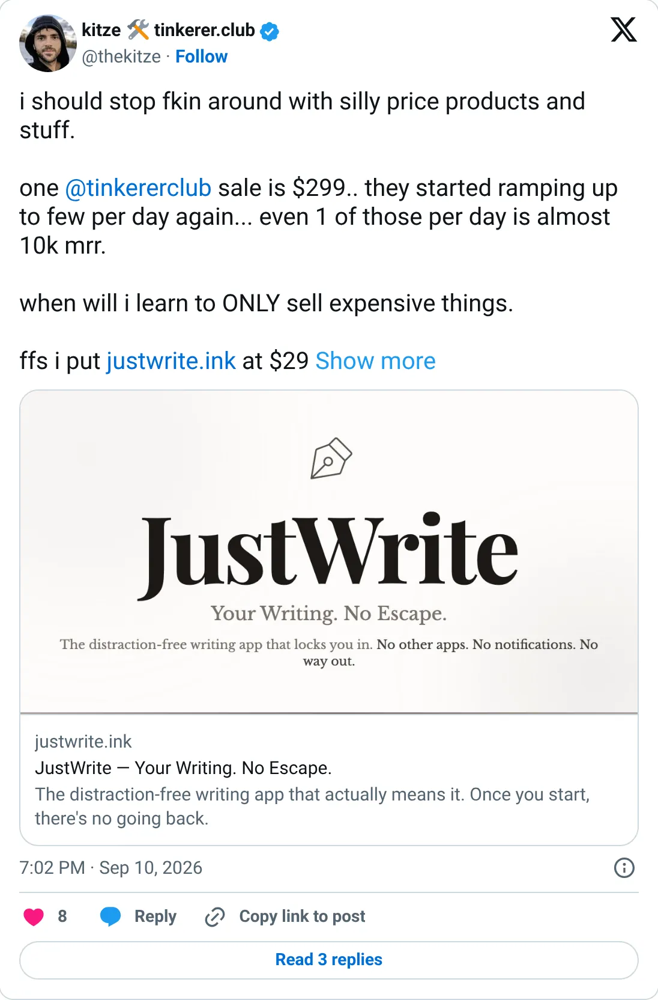

Don't build this
Kitze (tinkerer.club & products)
A launch week of one-time sales, ranked like a company.
$223.3K last 30 days
Should you build this
The ranked number is $223k in a recent 30 days. TrustMRR shows no MRR. The Polar key died on 9 February 2026 after $150.9k verified in nine days of one-time sales, a $299 club and some products. Ranking that week as a run-rate is the trick. A paid community can be real. A launch spike is not a company you model yours on.
Cited from the captured posts, shown below: the key post (Sep 10, 2026) is the source for “Founder: one Tinkerer Club sale is $299 ("even 1/day is almost $10K MRR")”.
Posts this is based on

Founder: one Tinkerer Club sale is $299 ("even 1/day is almost $10K MRR")
Open on X
What the product is
A developer and educator who sells products, courses and the paid Tinkerer Club community for builders. TrustMRR is verified through Polar.
⚠ Older data: the Polar key expired, so TrustMRR data stops on Feb 9, 2026. TrustMRR shows no MRR, so the headline is last-30-day revenue from one-time sales.